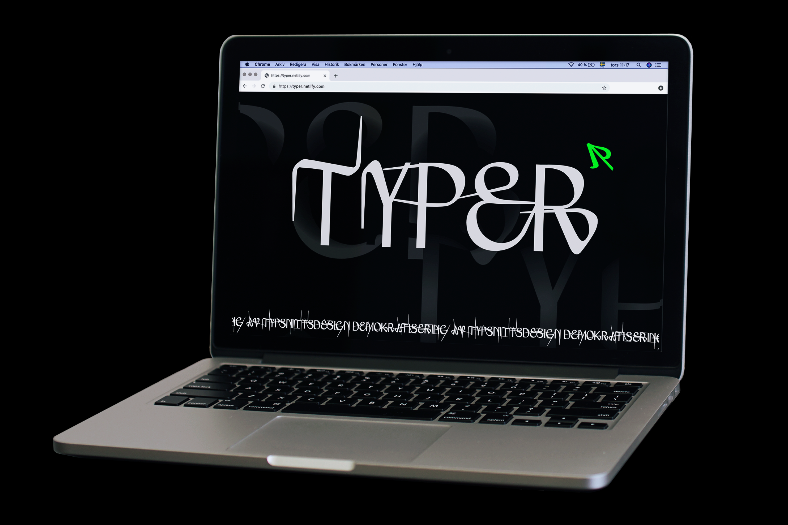

The web publication Typer is an attempt at approaching the topic of democratization from a typographical perspective. Typer explores what conditions are created by the accessibility of digital tools and how one as designer can facilitate that discussion.
The project seeks to broaden it's scope by engaging established designers and their views on the relation between democratization and the current culture within type design. Participating are Amanda & Erik, Krot & Krass, Parasto Backman and Arina Stoenescu.
The typeface Typer Variable is custom made and uses the publication as its specimen. The font is designed as a variable.
To web publication →

